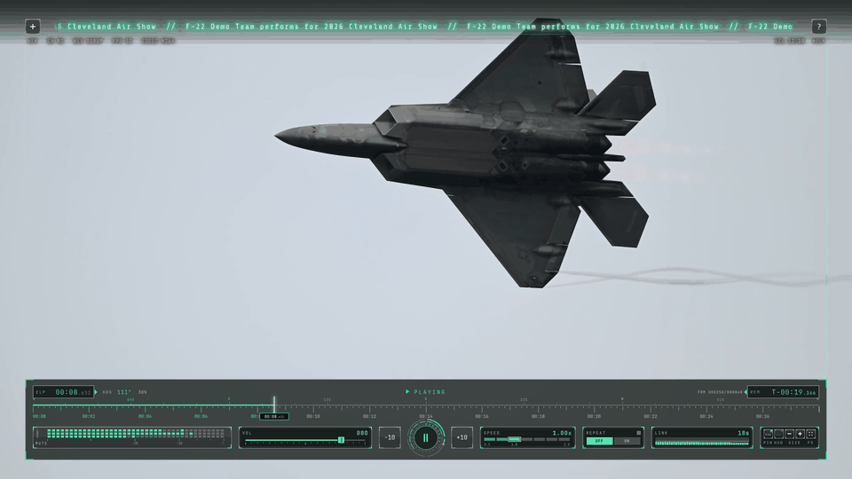
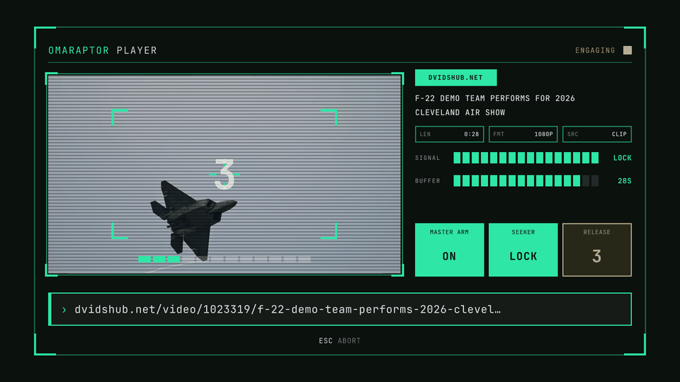
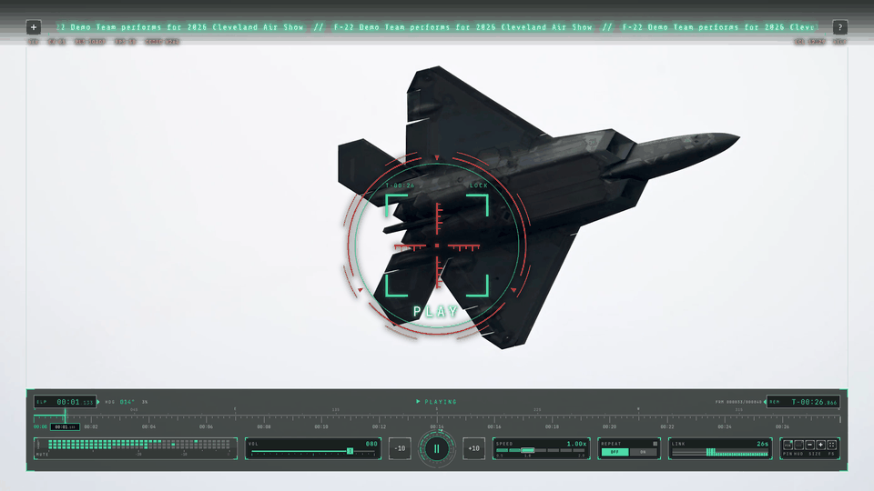
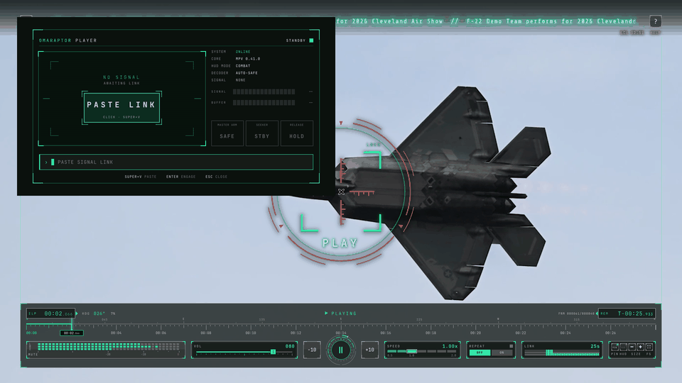
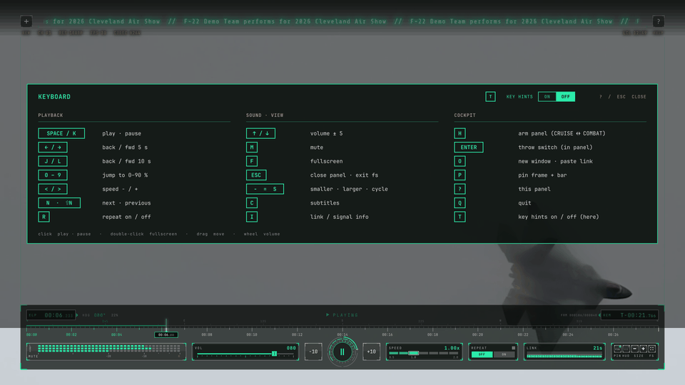

OMARCHY · ARCH · LINUX · MPV · YT-DLP · MIT
OmaRaptor Player
IN REVIEWYouTube video player for Omarchy and Linux
A free, open-source, super-light player for almost any video link. Copy a link, press Super+Alt+Y, and it plays in a pinned 16:9 window. No login, no browser, and a HUD inspired by the F-22 Raptor.











omarchy plugin add https://github.com/KarPage/omaraptor-player --enableSizes measured 2026-10-30 from a depth-1 clone of github.com/KarPage/omaraptor-player.
01 FEATURES
Copy a link, press Super+Alt+Y. The first player opens centred, more players park in the free corners.
A bare player with a slim bar, or the full cockpit. MASTER ARM switches between them.
Seek tape, time, volume, speed, repeat, link status and a real audio signal meter.
Heading tape, VOL and REM tapes, a top time box and a scope that locks on when you pause.
Timers turn amber, then red, and a NEXT card shows what plays next.
No login and no browser. mpv and yt-dlp underneath, so it starts fast and stays light.
02 SUPPORTED SITES
- YOUTUBE
- X
- TWITCH
- TIKTOK
- DAILYMOTION
- STREAMABLE
- DIRECT FILES
- HLS
- LIVE STREAMS
Vimeo and Reddit don't work, because they need a login.
03 INSTALL
omarchy plugin add https://github.com/KarPage/omaraptor-player --enablegit clone https://github.com/KarPage/omaraptor-player && cd omaraptor-player && ./install.shNeeds mpv, yt-dlp, socat, jq and wl-clipboard. The installer asks before it adds one line to your Hyprland config. ./uninstall.sh removes it all.
04 CREDITS · NOTES
Footage in the screen recording and screenshots: “F-22 Demo Team performs for 2026 Cleveland Air Show”, U.S. Air Force video by Staff Sgt. Mary Bowers (DVIDS 1023319), public domain. The appearance of U.S. Department of Defense (DoD) visual information does not imply or constitute DoD endorsement.
Recorded in the real OmaRaptor Player (mpv with the OmaRaptor HUD) on Linux. Muted on this page.
Unofficial fan project. Not affiliated with or endorsed by the U.S. Air Force, Lockheed Martin, SpaceX or NASA.